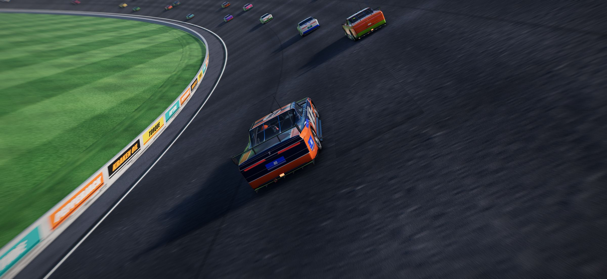
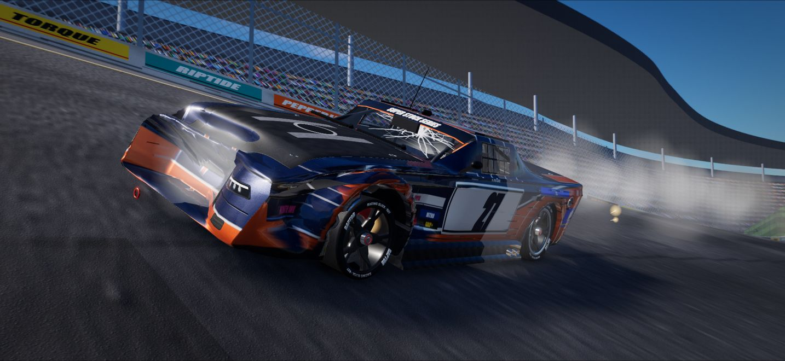
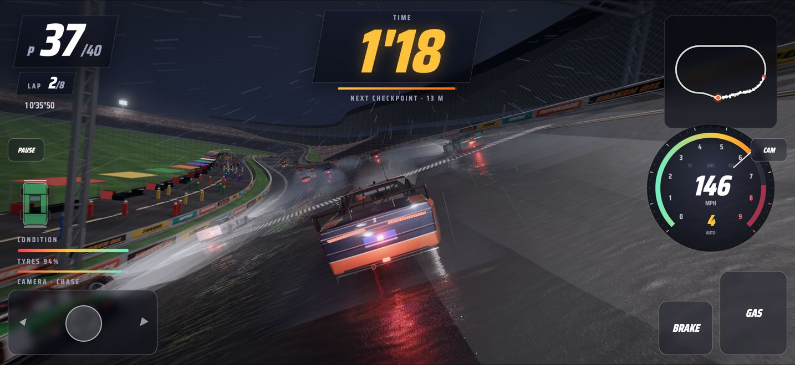
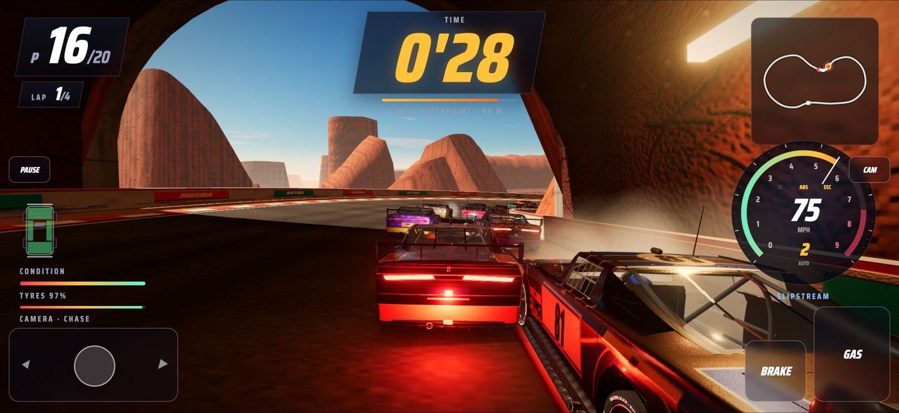
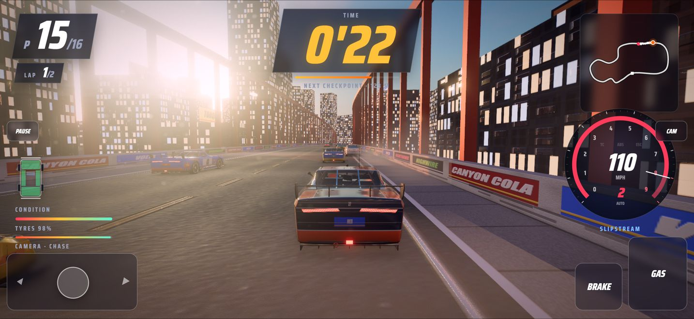
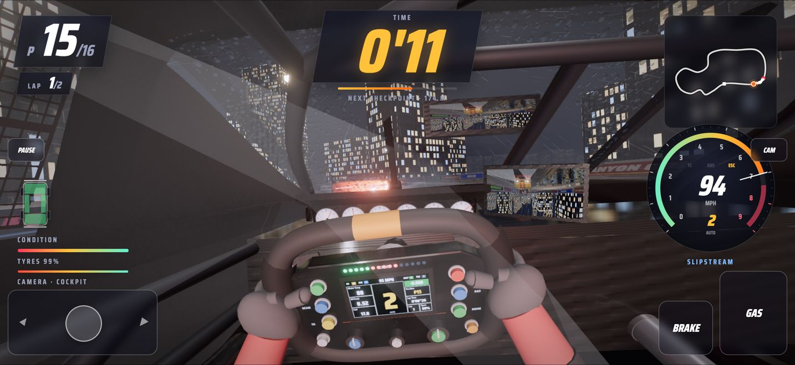
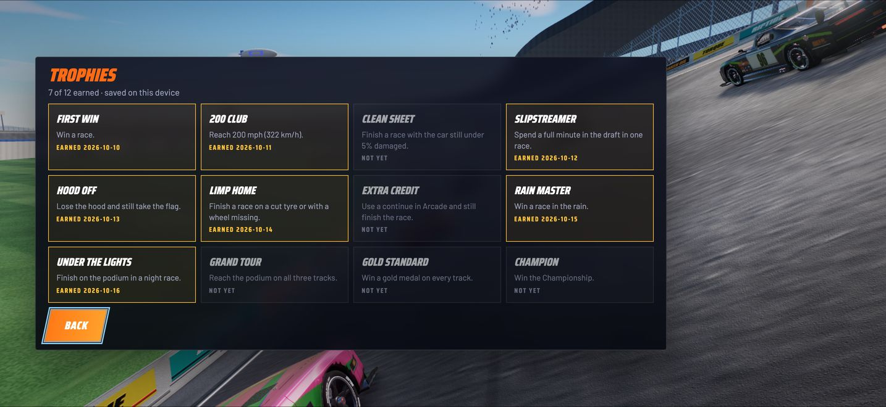

Stock car racing
for iPhone
Forty cars on a banked tri-oval, a slipstream worth real speed, and damage that lands exactly where you were hit. Three tracks, night and rain, and no connection needed.
Built to be driven
Super Stock 500 runs its own driving model, not a canned arcade script. That is why drafting, contact and the weather all change how a race plays out.
Draft the pack
Tuck in behind the car ahead and the slipstream pulls you along. Time the pass on the banking of a 2.5 km tri-oval with a 40-car field.
Damage that shows
Panels crumple at the point of impact. The hood unpins, lifts and tears away, tyres cut, wheels come off and engines catch fire.
Real handling
A 240 Hz tyre and suspension simulation. Keep ABS, traction and stability control on, or switch them off and drive it like a sim.
Night and rain
Race by day, at dusk, under the lights at night or in the rain, with spray, wet reflections and working wipers in the cockpit.
Touch or controller
Tilt to steer, use the slide pad or arrow buttons, or pair a PlayStation, Xbox or MFi controller. Haptics on every hit.
Offline and private
No account, no ads and no tracking. Records, career levels and 12 trophies are saved on your iPhone.
From the track
Captured from the game itself, in races on all three tracks.






Three tracks
| Free download | Full Grid (one-off purchase) |
|---|---|
| Sunshine Speedway | Red Canyon Raceway and Harbor Lights |
| Volta #27 and Bluejay #51 (Bluejay at career level 2) | Magma #8, Nighthawk #72 and Goldline #99 |
| Arcade and Quick race | The three-round Championship |
| Day, dusk, night and rain, all camera views, trophies and records | Restore on every device on your Apple Account; Family Sharing |
Questions
Is Super Stock 500 free?
Yes. The download is free and includes Sunshine Speedway, two starter cars, Arcade and Quick race, with no time limit and no ads. The Full Grid is a single one-off purchase of £2.99 in the UK that adds Red Canyon Raceway, Harbor Lights, three more cars and the three-round Championship.
Does it work offline?
Yes. Everything runs on your iPhone, so you can race on a plane, on a train or anywhere without signal. A connection is only used when you buy or restore the Full Grid through the App Store.
Can I play with a game controller?
Yes. PlayStation, Xbox and MFi controllers work without any setup. On screen you can steer by tilting the phone, with a slide pad or with arrow buttons.
Do I need an account?
No. There is no sign-in of any kind. Your records, career level and the 12 trophies are saved on your iPhone.
Are there ads or tracking?
No ads, no analytics and no tracking. The App Store privacy label is Data Not Collected. See the privacy policy.
Which iPhones does it run on?
iPhones with iOS 17 or later. The game picks a graphics level to suit your phone, and you can change it in Settings.
I bought the Full Grid on another device. How do I get it back?
Open Settings in the game, or the Full Grid screen, and tap Restore purchases while signed in to the same Apple Account. Family Sharing is supported.